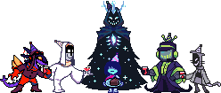
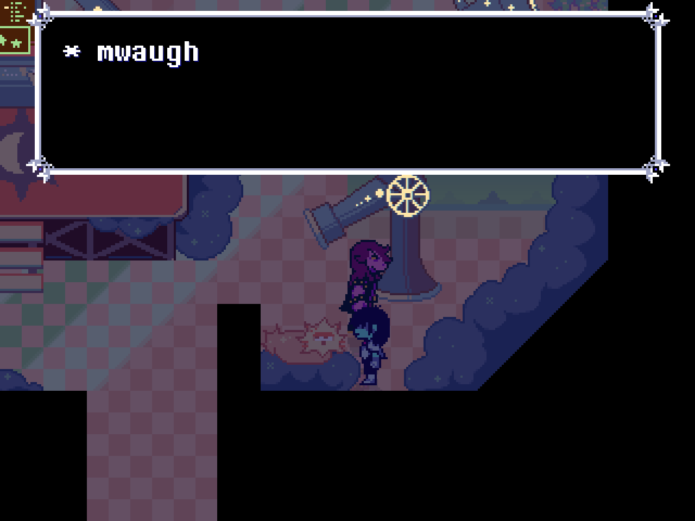
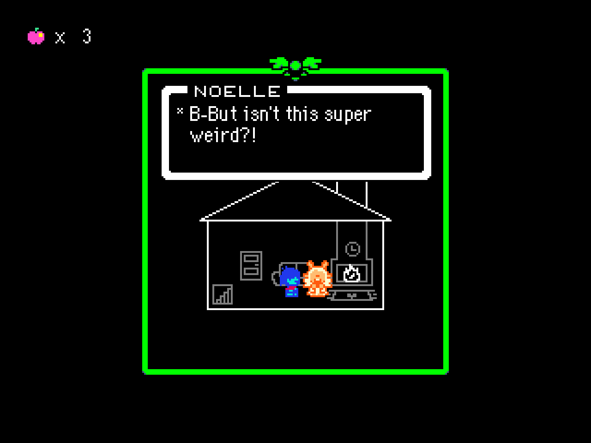
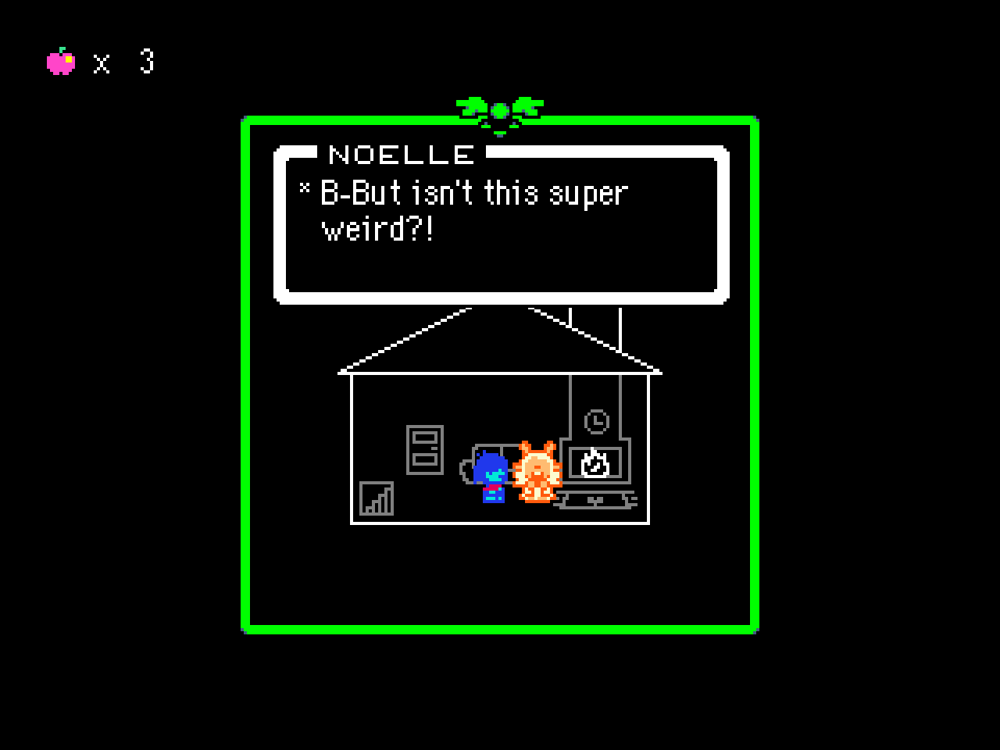

Mini-Newsletter

Greetings, once again! Crazy how it's been 3 years since this project started, hasn't it?!
Even though we're only celebrating several days later...
Sorry for the delay! This might be a smaller newsletter than the others, but we urge you to read it still! Without further ado, let's talk about our latest achievements...
You Renamed the Project?!
That's right! The project has gone through another renaming... Well, third time's the charm!
Say goodbye to "Andromedia", and hello to "ASTRAL DISC". We already had that term floating around, and decided that it made much more sense for it to be the actual project title instead of something like "Andromedia". It seemed a bit redundant.
The website domain, and all mentions of the old project name have now been updated. We understand it might be a little confusing to people who were already used to the old title, but we ask that from now on, please refer to the project as "ASTRAL DISC".
Candleholder is still "Candleholder". Don't worry. HUECYCLES isn't letting go of that corny name.
Even More Progress...
We've been making lots of progress with the overall structure of the chapters, general timeline, progress documents... internal stuff like that. Following the name change, we have also started polishing the chapter selection system we had in place, and it is now much more stable!
Chapter 3 and Chapter 4 are our main focus right now, with Chapter 5 also getting a few fun things here and there, like certain shops, polishing a certain segment in it, etc...

 

With this new reorganizing and slight rebranding of the project, we're hoping to get the first video out very very soon when 2025 comes...
Website Update
Remember when this webste used to be COOL? Well, now you can explore to your heart's delight, like old times!
We've worked very very hard on this update (actual character information pages, WOO!!) and will keep bringing new stuff for you to see as time passes. Wonder if you can find some secrets within as well...?
Who knows.
Closing Thoughts
While we were cooking things for this website, time for this newsletter has... run short. So, it became rather pocket-sized...
But we, as a team, wanted to take this moment to thank you all for sticking with us even when burnout hit for a while. We're all glad to have built such a tight-knit community and can only hope it withstands the next BIG change in fandom environment when Toby drops the official Chapters 3-4.
We're very close to that day now... and we'd like to say that despite what people may think, we'll still be here, as an AU of a game we love, made entirely for fun, driven by creativity and passion.
We are all very proud of what we've been making and want to share the final product with the world.
And again, most of all...